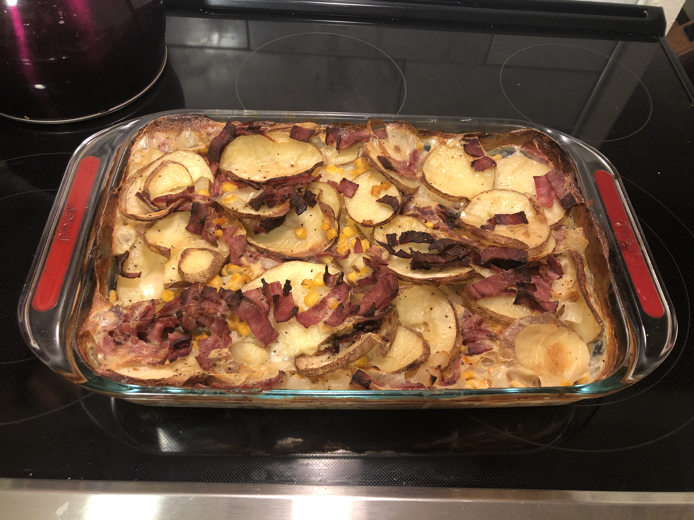

Scalloped Potatoes

Description
Scalloped potatoes do not have cheese. The addition of cheese transforms the dish into potatoes au gratin.
A warm potatoes showcase of some creamy potatoes, some crispy bits, and 2 hours of doing somthing else while they cook. If you do not have an oven liner, I strongly recommend using a large baking sheet on the rack below the rack the 9x13 dish to catch any overflow while cooking.
Ingredients
- 2-3 large potatoes, sliced to 1/4 thick
- 1 chopped onion
- 3 C milk
- 3 Tb cornstarch
- 1/2 tsp salt
- pepper to taste
- 1 can creamed corn
- 10 strips of bacon, sliced into 1/2 inch strips, divided in 2 even portions
Steps
- Preheat oven to 350 degrees F
- Combine potatoes, creamed corn, onion, and half of the bacon in a 9x13 glass baking dish. You can arrange them but I just make them sorta level on top. Sprinkle the remaining bacon on top of the potatoes
- Combine milk, cornstarch, salt, and pepper. Pour over the potatoes.
- Bake for 2 hours.